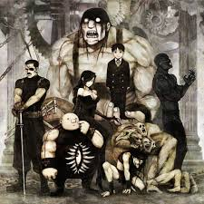

Homunculo
Un homúnculo en Fullmetal Alchemist: Brotherhood es un ser artificial creado a partir de la Piedra Filosofal, cuyo propósito, poderes y personalidad están directamente ligados a uno de los Siete Pecados Capitales. Son los principales antagonistas de la serie y fueron creados por el villano principal, Padre, quien les infundió fragmentos de su propia piedra para que actuaran como extensiones de su voluntad.
Los homúnculos representan el lado oscuro de la alquimia y la ambición humana. Son la manifestación de lo que ocurre cuando se busca el poder absoluto sin moral ni límites. A lo largo de la serie, sirven como enemigos directos de los protagonistas, cada uno enfrentando a los hermanos Elric y sus aliados con métodos y motivaciones distintas.
Creacion
Los homúnculos pueden ser creados con un objetivo específico de formas diferentes.
- Un Homúnculo puede ser creado mediante un fragmento de la piedra filosofal en estado puro con ingredientes esenciales para la creación de un cuerpo humano. Con esto, el homúnculo no puede envejecer además de que al sustraerle su esencia fácilmente pueden crear un cuerpo totalmente nuevo pero a cambio, el homúnculo adquiere habilidades diferentes a las que tenía en un principio.
- El otro método de creación de un homúnculo es mucho más peligroso, ya que requiere insertar la piedra filosofal en estado líquido dentro del sistema circulatorio de un humano. Al hacerlo, existe el riesgo de que el cuerpo rechace la piedra y muera. Solamente Ira y la reencarnación de Codicia en el cuerpo de Ling Yao fueron creados por este medio.
Destrucción
Si bien es cierto que sus capacidades de regeneración los hacen virtualmente invencibles, no son inmortales. Un Homúnculo puede ser asesinado si lo atacan tantas veces como sea necesario para hacer que la Piedra Filosofal que tienen en sus cuerpos agote todas las almas humanas que permiten al Homúnculo sobrevivir. Cuando son destruidos, sus cuerpos se descomponen y la piedra Filosofal que tienen en su cuerpo se desintegra por completo.